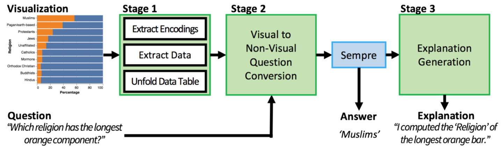

图表问题的回答及解释自动生成系统
CHI 2020 论文《Answering Questions about Charts and Generating Visual Explanations》阅读报告
一. 摘要
人们经常使用图表(chart)进行数据分析，回答数据问题，并向他人解释自己的回答。经过调查，我们发现人们对图表提出的问题和给出解释常常涉及到图表中的可视特征（如形状、颜色、宽高等）。基于这些，我们开发了一套自动的图表问答流水线，在给出针对某幅图表的某个问题的回答的同时，能够对得出答案的过程生成指向可视信息的自然语言解释。
输入的 Vega-Lite 格式图表和一个关于该图表的自然语言描述的问题，我们的系统首先从图表中提取数据和可视编码；然后它会对自然语言问题进行转译，将问题描述中对图表可视特征的引用转换为对数据域和数据值的引用；进而采用一种目前最先进的机器学习算法对转译后的问题做出回答。最后，系统使用了一个基于模板的方法，生成该回答的自然语言解释，说明其答案是怎样利用图表的可视信息得出的。
我们进行了用户调研，结果表明我们的系统所生成的“可视解释”在透明性（transparency，指文字解释的详细与易懂程度）方面明显高于人工生成的解释，并且在实用性和可信度方面与人工生成的解释相当。
二. 背景介绍
使用可视化的方法分析数据，回答问题并解释答案的得出过程是许多决策任务的核心环节。然而，执行如此复杂的可视分析任务并非易事，用户经常会面对一些复杂问题，而回答这些问题常常需要综合多种操作或运算，例如从图表中检索数值、查找极值、比较与整合多个部分的数据，还有求和与求差。
2.1 问答示例
考虑下图中的柱状图以及问题“哪个宗教被大多数牧师认为宗教极端主义最为盛行?”
为了回答这个问题，用户需要在知晓柱形与色彩这些可视特征所代表的意义的基础上，从视觉上比较橙色柱所代表的数值，即找出最长的那根橙色柱，然后从图中找到对应的宗教名称；对于这个问题，最终答案是“Muslims”。
2.2 “可视型”问题与提问习惯
当用户在分析一个图表时，他们经常会通过引用图表的可视特征（例如柱形与色彩）以及这些特征的可视属性（例如柱宽和色值）提出问题。举个例子，在分析上图中的柱状图时，用户可能会问“哪个宗教的橙色柱最长？”，这个问题与我们示例中的问题两个问题是等价的，可以称作其“可视版本”。尽管它仍是一个复杂问题（需要综合查找与比较两个操作），但是因为它引用了图表中的可视特征，使得它更短，更直接地暗示了系统回答问题所需要进行的操作。
然而，要回答类似这样的复杂问题，不论它们引用图表的可视特征与否，都可能会耗费极长的时间和精力，因为回答者需要执行若干复杂的操作才能最终得出答案。
为了更深入地了解人们针对图表的提问习惯，我们进行了一个调查，收集了52个真实世界中的图表，以及与之相关的629个人工提出的问题和748个人工生成的解释。我们之后对这些问题按照两个正交维度进行分类；
（1）查找型（回答问题仅需要一次数值检索操作）— 复合型（回答问题需要综合多种操作）；
（2）可视型（语言中引用了图表的可视特征）— 非可视型（语言中未引用图表的可视特征）；
我们发现：人们经常会问复合型问题（70%）和可视型问题（12%），可视型的解释非常常见（51%）。
2.3 自动问答系统
我们能否开发一个工具来自动地回答此类关于图表的自然语言问题？自动问答可以为用户提供多方面的便利，它会极大地节约用户执行如检索，比较，整合（求和，求均值）等复杂操作的时间和精力。更为重要的是，将这样一个自然语言交互界面引入数据分析的工作流中可以降低使用图表分析数据的门槛。使那些未曾接受过数据分析工具和可视化知识培训的人们轻松得到问题的答案。然而，对于那些依赖于这样一个自动工具的用户，有一点至关重要，那就是工具必须能够透明地解释它如何得出答案的，以此方便用户知晓操作过程以及验证结果的正确性。
此外，我们的调查表明大部分好的解释是“可视型”的，因为它们能够解释答案是怎样从图表的可视特征中提取出来的。但是，目前还没有工作在图表的自动问答系统中提供答案的解释。
本文中，我们提出一个回答图表的自然语言问题并能够自动生成对应可视解释的流水线。我们的系统建立在 Sempre 的基础上，Sempre是一个针对关系型数据表的问答系统，主要回答复合、非可视型的问题。
我们极大地拓展了Sempre，使其可以回答关于图表的问题并给出对应的可视型解释。我们的流水线可以处理查找型、组合型与可视型、非可视型问题的任意交叉。我们方法的关键在于利用Vega-Lite格式的输入图表的可视编码结构（Vega-Lite格式是一种图表描述范式，描述了数据映射的可视编码）以准确地回答可视型问题并生成对应的可视解释。
我们以在调查中收集到的629个图表问题为语料库，对我们的问答系统进行了评估。发现我们的系统正确回答了语料库中的所有问题的51%，而单用Sempre只能获得39%的准确率，二者相差12%。对于可视问题，采用我们的系统之后正确率更是超过了53%；对于非可视问题，我们的系统也比Sempre的表现高出了6%。这些结果表明，图表的可视编码信息对于图表问题的自动回答是非常有价值的。
最后，我们进行了一项用户调查，发现我们的系统生成的可视化解释明显比人工生成的解释更加透明，同时在可用性和可信度方面与人工生成的解释不相上下。
三. 方法
3.1 系统概况
输入：一张Vega-Lite格式图表(chart)和 一个自然语言问题(question)
输出：问题答案(answer)和 答案解释(explanation)
示例：
输入图表为图一柱状图，问题为 “Which religion has the longest orange component?”；
输出问题答案为 “Muslims”，解释为 “I looked up ‘Religion’ of the longest orange bar.“。
系统流水线

阶段一：图表转换 (Chart-table transformation)
- 将输入的图表转化为 Vega-Lite 格式
- 从转化后的 Vega-Lite 格式中提取可视编码信息
- 将提取的信息展开成一张关系型数据表
阶段二：问题转译与答案生成 (Question transformation & Answer generation)
- 依照阶段一提取的数据关系信息，将问题中含有的“可视型”成分转换为对应的“非可视型”成分，得到完全针对该数据表的“非可视型”问题
- 将转译后的问题和阶段一生成的数据表输入Sempre中，得到答案
阶段三：解释生成 (Explanation generation)
- 借助阶段二中Sempre生成答案过程中使用的λ表达式，利用设计好的一系列规则（模板），将其转化为“可视型”自然语言解释
- 输出答案与解释
示例数据流：
3.2 技术实现
3.2.1 阶段一：图表解码 → 信息提取 → 表格重构
这一阶段主要对输入图表(chart)进行处理，因为 Sempre 接受的输入是关系型数据表和自然语言问题，所以要想使用 Sempre 作为系统核心，我们需要先将输入的图表转化为 Sempre 所要求的数据表格(table)。第一阶段的过程大致可分为三个部分：先将输入图表由可视图形解码为 Vega-Lite 格式代码，然后从代码中提取编码方式和编码数据，最后利用提取的信息构建要输入给 Sempre 的关系型数据表。
图表解码
解码的目标是得到输入图表的 Vega-Lite 格式源信息，便于之后提取数据和编码方式，具体的解码过程如下：
- 若原图表使用 Vega-Lite 格式，那么直接使用
- 若原图表使用 D3.js 创建，那么使用 ==D3 deconstructor== 转换为 Vega-Lite 格式
- 若原图表使用 bitmap 表示，那么先使用 ==ReVision== 提取数据(data)和标志(mark)，然后手动添加可视编码将其完全转换为 Vega-Lite 格式
示例图的 Vega-Lite 格式如下：
信息提取
在对图表解码得到 Vega-Lite 格式数据后，从中分别提取可视编码方式和编码数据。可视编码方式就是将数据域映射到可视属性的方式。
- 提取编码：数据域 → 可视属性
- 方法：直接在 Vega-Lite 格式中查找关键字
- 例如：
- 柱状图的y方向（可视属性）编码了名词属性的 “Religion”（数据域）
- 柱状图的x方向（可视属性）编码了量词属性的 “Percentage”（数据域）
- 柱状图的颜色（可视属性）编码了名词属性的 “Response”（数据域）
- 其中，颜色#EE8426 代表 “Common”，#5376A7代表 “Not Common”
- 提取数据
- 方法：运行== Vega-Lite 编译器==，在数据经过所有转换操作被渲染成图之前截取，得到全体数据元组。
- 示例 Vega-Lite 格式编译中得到的数据元组（表格）如下图左侧。
- 这里的数据元组是一种最“简陋”的表格，是所有最小数据单元的简单排列，没有形成行列数据域的“交叉”。在考察数据元组中的任意一个数据项时只需进行一维线性读取。如示例中认为宗教极端主义在 Muslims 中 Common 的比例为 57%，认为宗教极端主义在 Muslims 中 Not common 的比例为 43%，两次读取分两次横向进行；
- 而我们日常生活中所使用的表格（如下图右侧）为了发挥表格的二维优势，更加直观、更加方便阅读和查找通常会制造行列数据域的”交叉“，在考察任意一个数据项时需要从横纵两个维度的数据域进行查找对应。例如根据示例数据元组重构的表格（下图右侧）将数据域 “Religion” 和 “Response” 作为正交维度，在考察宗教极端主义在 Muslims 中 Common 和 Not common 时需要从横纵两个方向查找。
表格重构
- 重构目标：
- 从 Vega-Lite 编译器中获取的表格是“平的”（flat），是一个个数据元组的排列，表格中没有形成“交叉”，不是人们通常使用的表格形式，我们需要对它进行重构，使得重构后的表格符合人们通常的使用形式
- 为什么要重构表格？
- 因为 Sempre 的训练数据集中的表格是人们通常使用的形式，为了使 Sempre 最大程度地发挥作用，给出准确的答案，需要将表格重构为 Sempre 最熟悉最 favor 的样子
- 怎样重构表格？
- 首先，从原表格中提取枢轴列(pivot column)，将其中的数据项作为新表格的列表头(column header)
- 怎样判断枢轴列？
- 列内容需要以相同的频率重复1次以上
- 若有多列满足条件，选重复频率最高的作为枢轴列
- 怎样判断枢轴列？
- 然后，对数据按照新规定的列表头进行对齐
- 例如，上图左侧中原表格 “Religion” 中每个数据项（宗教类型）的重复频率为2，而 “Response” 中每个数据项（Common / Not common）的重复频率为10，选择“Response”作为枢轴列并将其中数据项 “Common / Not common” 作为新表格的列表头，重新对齐数据。
- 首先，从原表格中提取枢轴列(pivot column)，将其中的数据项作为新表格的列表头(column header)
3.2.2 阶段二：图形标志检测 → 语义分析 → 可视属性检测 → 可视操作检测 → 套用编码 → 自然语言转换
这一阶段主要对输入的自然语言问题（question）进行处理，系统的核心模块 Sempre 接受的输入是关系型数据表和自然语言问题，我们已经在阶段一将输入的图表（chart）转化为了 Sempre 所 favor 的数据表格(table)，但是此时还不能直接将问题同表格一起输入 Sempre，因为在上文中分析过人们对表格的提问习惯：“当用户在分析一个图表时，他们经常会通过引用图表的可视特征（例如柱形与色彩）以及这些特征的可视属性（例如柱宽和色值）提出问题”，将带有可视引用的问题直接输入 Sempre 会导致它不知所云，无法给出正确答案。因此，我们有必要对输入的自然语言问题进行处理，将其中的可视引用转换为对表格中数据域的引用。
另外，上文中还分析过人们提问的需要综合多种操作或运算的复合型问题比例为70%，而在包含了可视引用的问题中对需要进行的操作或运算的描述常常是暗示性的，如示例问题中“最长的橙色柱”，我们将“橙色柱”替换为表格中的“回答为普遍的数据”，此时“最长”就显得不合语境了，它实际指的是“比例最高”。因此，我们还需要对问题中此类用语转换为恰当的操作或运算。
这一阶段的处理较为复杂，可分为图形标志检测、语义分析、可视属性检测、可视操作检测、套用编码和自然语言转换这六步，其中的主要方法涉及到使用下图中手动创建的 词表 进行查找和替换，下面对每步分别详细介绍：
图形标志检测
- 目标：找到问题中所有指向图表中图形标志（visual marks）的用语，即问题所针对的的对象
- 方法：从手动创建的词表的标志部分中查找匹配
- 例如：
- 上图词表中第一部分，对于柱状图的图形标志，提问者可能用会使用“柱”、“长方形”、“部分”等词语来代指柱状图中的一根或多根柱
- 对于问题”Which religion has the longest orange component?”，图形标志即为“component”，针对它，问题给出了限定“the longest orange”
语义分析
- 目标：识别问题中对所有图形标志的描述性用语，即问题中修饰图形标志的定语
- 方法：
- 使用 ==Stanford CoreNLP dependency parser== 获取一棵句法分析树
- 对树进行以下操作：
- 在树中找到标志词节点
- 以该点为源点，向外做BFS
- 对遍历到的节点选择性记录（记录有实际意义的成分），被记录下的词即为描述性用语
- 例如，示例问题的语法分析树如下：
- 不记录疑问词“which”和冠词“the”，其他有实际意义的词被纳入描述性用语，之间的依赖关系由树边描述
可视属性检测
- 目标：从上一步识别出的描述性用语中识别出可视属性（visual attributes）
- 方法：
- 从手动创建的词表的可视属性部分过滤出阶段一中提取到的可视编码中的可视属性，从而缩小了范围
- 然后从描述性用语中逐个词地与过滤后的可视属性词表进行比较、尝试匹配
- 采用基于 ==Word2vec== 的近义查询
- 遍历所有描述性用语与过滤后的可视属性词，计算它们的相似度，相似度超过一既定阈值的即可匹配
- 对颜色描述词的特殊处理：
- 从X11颜色表中获取描述词所代指颜色的16进制码
- 检查从图表中提取到的所有颜色码
- 用与描述词颜色码距离最近的颜色码替换之
- 例如：对示例问题中的颜色描述词“orange”的处理
可视操作检测
- 目标：识别描述用语中所暗示的操作或运算
- 方法：
- 利用手动创建的词表的可视操作（visual operation）部分
- 注意：一种可视操作（运算）必针对一个可视属性，如：对属性“长度”求“最大值”，因此，词表中的可视操作部分实际上将每个描述用语都对应到一个（操作，属性）对
- 匹配可视操作与描述性用语：与上一步类似地使用基于 ==Word2vec== 的近义查询
- 例如：示例问题中出现“longest”，便可由词表对应到（argmax，width）
套用编码
- 目标和方法：套用阶段一中提取的编码信息，将所有与可视属性、可视操作相关的用语替换为数据域(data field)和数据值(data value)
- 例如：可视属性“width”替换为数据域“percentage”，可视属性”color“的取值”#EE8423“替换为数据值”common“
自然语言转换
- 目标：将问题转换为不含任何“可视信息”的，完全是自然语言的问题
- 方法：
- 在数据值后补充对应的数据域，例如上一步中替换的数据值“common”后面补充对应的数据域“response”
- 重写图形标志词、可视操作和可视属性，如示例问题中标志词“component”重写为“data”、操作“argmax”重写为“most”
处理流程总览
此时，将处理好的完全”非可视“的自然语言问题连同阶段一中得到的关系型数据表输入 Sempre 中，就可以得到问题的回答了。
3.2.3 阶段三：λ表达式-自然语言转换 → 隐藏域恢复 → 冗余清理 → 语句完善 → 套用编码
通过前两个阶段，我们从图表中提取信息并构建了关系型数表，将自然语言问题中的可视引用全部转换为针对表格数据域和操作（运算）的非可视引用，并输入 Sempre 得到了答案。在第三阶段，我们要着手生成问题求解过程的自然语言解释（explanation）。这里利用了 Sempre 求解答案过程中的中间产物：输入问题的λ表达式。因为这一表达式本身就是对问题解决方案的描述，我们便充分利用它，设计一系列规则将λ表达式转换为自然语言，并通过规定解释模板将转换后的自然语言进行规范化。最后，因为在解释环节使用可视引用会更加直观，便于用户与原图表对应，所以我们将阶段一中提取的编码信息套用到解释中，将非可视的解释“可视化”，得到最终的解释。
λ表达式-自然语言转换
λ表达式从何而来？
- Sempre在处理输入的问题时，会将问题转换为λ表达式的格式，该表达式描述了在表格中的要进行的操作（运算）
- 例如，示例问题第二阶段转换后的问题“which religion has the most percentage common response data?”和第一阶段构造的表格（见阶段一图2）输入 Sempre 后产生的 λ表达式为：argmax(R[Religion].Row, R[λx(R[Number].R[Common].Religion.x)])
λ表达式的特点
- λ表达式的运算操作和生成规则都是有限的
- 利用这一特点，可以编制有限的规则，将λ表达式转换为类自然语言
- 编制转换规则

- 利用以上规则，上文中 λ表达式被转化为：‘Religion’ of data with the greatest ‘Common’ of ‘Religion’
隐藏域恢复
- 隐藏域：在表格重构过程中被隐藏了的数据域
- 例如：阶段一中将数据元组重构为关系型数据表时，数据域”percentage”就被隐藏了，只留下了其中的数据值
- 恢复方法：将隐藏域用辅助注释(auxiliary annotation)的方式保留下来，在遇到对该隐藏域的数据值的引用时，为提高解释的透明性(transparency)，补充上隐藏域
- 例如：对于被隐藏的数据域”percentage”，我们在列“Common”和“Not Common”的每一个单元都用辅助注释保留下“percentage”，当需要恢复时，我们就将它拿出来，得到：‘Religion’ of data with the greatest ==‘Percentage’== of ‘Common’ of ‘Religion’
冗余清理
- 清除两类冗余：
- 数据域或数据项的重复，例如上一步中‘Religion’的重复
- 对数据域或“data”一词不必要的提及，例如上一步中的“data”一词
- 方法：使用正则表达式
- 利用以上规则，上文中句子被转换为‘Religion’ with the greatest ‘Percentage’ of ‘Common’
语句完善
- 目标：使生成的解释具备一句话所需的完整的语法结构
- 方法：
- 加入主语“I”
- 谓语动词：
- 若执行简单的“查找”操作，则用“looked up”
- 若执行简单的“计数”操作，则用“counted”
- 若执行其他复杂操作，则用“computed”
- 例如，上一步中句子加入主语和谓语后变为 I looked up ‘Religion’ with the greatest ‘Percentage’ of ‘Common’
套用编码
- 目标：经过前4步的转换，句子已经很自然了，但是我们希望解释是“可视”的，解释的用语尽可能地指向可视特征，方便用户快速从自然语言对应到图表中，故我们在这一步要使“不可视”文字解释转化为“可视”文字解释
- 方法：套用阶段一中提取的编码信息。与第二阶段的用法正好相反，第二阶段是将可视编码“反向”使用，把可视引用转换为不可视引用，而这一阶段要将可视编码“正向”使用，把不可视引用转换为可视引用
- 对于数据域被编码成颜色的数据值，我们直接将其转化为颜色词
- 对于被编码成其他可视属性的数据域，我们检查其周围的词是否有对此数据域的操作，并利用阶段二中构造的词表将它们替换为可视属性和操作
- 添加图形标志词，并对句子略作调整，使其他词都修饰该标志词
- 例如：
- 将被编码为颜色的数据域“response”的数据值“common”一词转换为颜色词“color”
- 对数据域“percentage”一词，同时考虑相邻的词“greatest”，通过可视编码确定对应的可视操作和属性是“argmax”“width”，然后利用词表将这对（操作，属性）转换为描述词“longest”，
- 最后添加图形标志词“bar”，对句子略作调整，得到 I looked up ‘Religion’ of the longest orange bar.
处理流程总览
至此，问题答案在第二阶段得到，答案解释也已经在第三阶段生成，将它们输出，系统任务完成。
四. 可改进之处
4.1 自然语言解释可视化
该系统生成的解释并不是真正的 “可视”解释，其解释方式还是自然语言，仅仅是在用语上指向了图表中的 “可视信息”。实际上，自然语言的解释是不够直观的，用户在验证答案时需要自行将自然语言中的“可视信息”对应到图表中，若能将这一对应过程用真正可视化的“图形”解释生成，交互方式会更友好。
4.2 系统对复杂问题的支持
以下给出了4个错误答案的例子
错误的原因主要来自系统对自然语言问题的解析失当，例如：
- 左上图中对position的操作错误，本应是排序，却对应成了查找；
- 右上图中对increment along the y axis操作错误，本应是坐标求差，却对应成了计数
- 右下图的问题虽然系统答对了，但是一读解释就能知道系统对该问题的理解完全错误，答对纯属巧合
此类错误出现在第二阶段，这个阶段中对图形标志、可视属性、可视操作的检测均依赖于人工制作的词表，而限于词表的规模，必然无法支持太多灵活的设问方式。另外，鉴于系统是围绕 Sempre 而构建的， 所以难以突破Sempre本身对复杂问题的解答能力。这两点我们从论文中给出的统计图中可以清晰看出：
- 系统对需要复合操作的问题的答案准确度（37%）远小于仅需要简单的查找操作的问题的答案准确度（84%）
- 在“非可视”问题类型中，系统与Sempre的差别并不大（49% VS 43%），说明了系统的求解能力一定程度上受制于Sempre的求解能力
解决这个问题，单纯扩充词表肯定是不够的，需要自然语言处理相关的解决方案。
4.3 系统对多种图表的支持
论文中给出的例子多为柱状图，仅有一个折线图的例子。按道理讲，沿用系统流水线，创建更多种图表类型的词表，是可以实现对多种图表的支持的，但是拓展后无疑会对系统的灵活度提出更高的要求，对问题和解释的多样性应该具备足够的支持能力。
This is copyright.